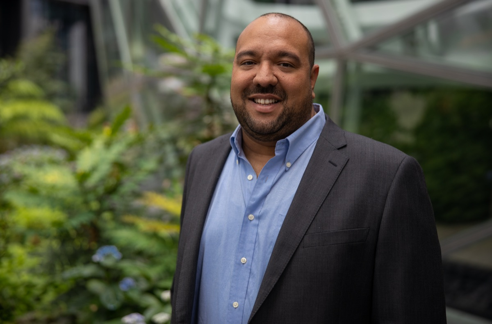

ABOUT ME
I've spent 15+ years turning technology into real-world impact — building mobile platforms at Deloitte and NBCUniversal, automating revenue systems for Amazon Prime Video, and now leading Amazon's global disaster relief. These days I'm focused on applied AI: building with LLMs and agents, and helping mission-driven teams put them to work.
26M+ relief items delivered · 200+ disaster responses · sub-72h global deployment · 10 years at Amazon
A passionate technologist. I attend as many conferences as I can, travel as much as I can with my amazing wife and try to eat some amazing food; all while meeting passionate and interesting people around the world.

Sr. Manager on the Disaster Relief by Amazon team. Born and raised in Puerto Rico; holds a BS in Computer Engineering from the UPR-Mayaguez and a MS in Information Security from Lipscomb University. Worked on mobile technologies for several years including at Deloitte building an enterprise app marketplace with over 40 apps and iPad applications for the top leaders in the company including the CEO. Later joined NBC News as the mobile program manager before joining Amazon. At Amazon I worked on payments, royalties and revenue automation for Prime Video. In 2017 I had the chance to participate as a technical volunteer in filling a plane with relief items for Puerto Rico after Hurricane Maria. Being able to mobilize the technology, people and resources of Amazon for a cause like this was "the experience of a lifetime". After that volunteer opportunity I decided to join the Disaster Relief by Amazon team permanently and I'm now in charge of our corporate in-kind donations and mobile disaster pickup points program.
If you are interested in connecting professionally check out my LinkedIn page https://linkedin.com/in/abediaz. If you prefer pictures follow me on Instagram https://instagram.com/abe238 or Twitter https://twitter.com/abe238.
Likes: Traveling (see stats below), Cider, RaspberryPis, Ice Baths and Contrast Showers

Passionate about disaster relief and helping others through technology. Also passionate about traveling (50+ countries), and learning about other cultures, food, and technology ecosystems.
Building with AI
A few things I've built by learning the tools the only way that sticks — shipping with them.
- AI PM Résumé Analyzer — CLI that scores résumés against an AI product-management framework, running Claude Sonnet 4.5, GPT-5, and Gemini side by side.
- Deep Research Agent — an autonomous agent that plans, executes, and writes cited research reports on a topic from scratch.
- Project Kickoff — scaffolds production-ready projects with security best practices and LLM-assisted setup baked in.
- Agent Skills — an open, cross-tool collection of reusable agent skills I've built and curated for AI coding agents.
- Volatility-Driven Decay — AI research: adaptive memory for RAG systems, with 42 reproducible experiments across 3 domains.
And the site you're reading? Built and deployed with my own gg-deploy (domain → GitHub Pages in 60s, with an MCP interface) — and it has a Markdown twin.